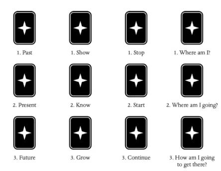
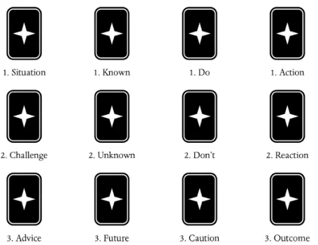

Card Grimoire
Tarot Exercises
Exercise One: Tarot Deck Checklist
Before working with a physical deck alongside this book, run through this checklist to confirm it is a true tarot deck rather than a differently structured divination deck. A deck's title is not proof on its own, since some decks are labeled tarot without matching the traditional structure.
- The deck contains seventy-eight cards total
- Twenty-two cards carry individual titles, typically running from the Fool through the World
- The deck is divided into four suits of fourteen cards each
- Each suit's numbered cards run from ace through ten
- Four court families appear across the suits, typically running from page through king, for sixteen court cards total
Meeting every point above confirms a genuine tarot deck. Many modern decks rename their cards and suits, so recognizing the underlying seventy-eight card structure matters more than the labels printed on the box.
Exercise Two: Stop, Drop, and Tarot
This exercise offers an immediate way to begin working with the cards, regardless of experience level, and its results resurface again later in the practice.
Choose one of the four three-card spreads listed below. Shuffle the deck, lay out three cards according to that spread, and read them for yourself. Record which cards appeared and what they seem to communicate, working from instinct and imagery rather than turning first to a reference for the official meaning. Once each card has been considered individually, step back and look at the three-card spread as a whole, noting any theme or energy that emerges across all three.
Three-Card Tarot Spreads

| Spread | Position 1 | Position 2 | Position 3 |
|---|---|---|---|
| Past-Present-Future Spread | Past | Present | Future |
| Show-Know-Grow Spread | Show | Know | Grow |
| Stop-Start-Continue Spread | Stop | Start | Continue |
| Where Am I Going Spread | Where am I? | Where am I going? | How am I going to get there? |
Exercise Three: Get to Know Your Tarot Deck
This exercise centers on first impressions, whether working through a first tarot deck for the very first time or getting acquainted with a new addition to a growing collection.
Go through the deck one card at a time and sort each into three piles based on an immediate, unfiltered reaction: a pile for cards that spark a strong positive response, a pile for cards that spark a strong negative response, and a pile for cards that produce no strong feeling either way. Resist the urge to overthink any single card; the goal is a first instinct rather than a considered judgment.
Once the full deck has been sorted, reflect on each pile using the prompts below. Detailed answers are not required for every card; look instead for overall themes and patterns within each group.
Positive pile
- Why do these cards stand out in a good way?
- Do they share anything in common?
- Do any reflect personal experiences or people in your life?
Negative pile
- Why do these cards feel unappealing?
- Do they share anything in common?
- Do any reflect something disliked about yourself, or something feared?
Neutral pile
- What makes these cards forgettable?
- Is there a shared color or visual theme?
- What changes would make them more appealing?
- Do any still reflect personal experience despite the lack of strong reaction?
Repeating this exercise across multiple decks can be especially revealing, since a card that stands out in one deck's art style may fall flat in another.
Exercise Four: Interview Your Tarot Deck
A deck's art style, theme, and creator's intent often give it a personality of its own, one that may suit certain kinds of readings better than others. A gentler, more nostalgic deck might feel right for inner child work, while a deck with romantic artwork might lend itself naturally to relationship questions. Every deck is capable of any kind of reading, but as a collection grows, understanding each deck's particular strengths becomes useful.
This exercise uses a dedicated spread to open a conversation with a deck directly. Shuffle while holding the spread's questions in mind, cut the deck, and lay the cards out in order. Sit with initial, intuitive impressions before consulting any reference for the cards' traditional meanings.
Interview Your Tarot Deck Spread
| Position | Question |
|---|---|
| 1 | What kind of readings will you excel at? |
| 2 | What are your strengths as a deck? |
| 3 | What limitations do you have? |
| 4 | What are you here to teach me? |
| 5 | How can I connect and work with you best? |
| 6 | What card best sums up our relationship? |
Exercise Five: Embody the Tarot Cards
Use a deck with people in the cards for this exercise, a meditative journey into a card that puts the practitioner in a card figure's position. Those who struggle with visualizing images in the mind's eye may want to try this exercise a few times mentally first. Mirroring the figure's body language can reveal how that figure feels about its environment. If nothing surfaces that way, try physically taking on the pose or position of the figure in the card instead. Work with one figure at a time, since different energy and information tends to come through with each person on the card.
Plan for about ten minutes per tarot card used in this exercise.
Begin by selecting a physical tarot card, either at random or a favorite. This exercise works especially well with a card that feels difficult to connect with, understand, or like.
With the chosen card close by, look at it closely and memorize every detail: the colors in the foreground and background, the symbols, the stance, the clothing, and any animals. Study the card until it can be seen clearly in the mind's eye with eyes closed.
When ready, close the eyes and breathe slowly, deeply, and comfortably, feet on the ground and hands resting in the lap, palms up. On the screen of the mind, begin painting the chosen card in as much detail as possible: outline the card first, note its title, then fill in the rest of the imagery, coloring it in like paint by numbers. Open the eyes again briefly if a detail or symbol needs a second look, aiming for as clear and crisp a mental image as possible.
Once the image feels firmly in place, step into the card and take on the position of its central figure where possible, embodying their stance, facing their direction, and imagining wearing what they wear. Then look around at the surrounding environment or other figures in the card: what lies behind, in front, above, and below. Notice the weather and any animals present and how they interact with the figure. Listen for the sounds of the card and any conversations happening within it, spending as much time taking it all in as needed.
When ready to leave, begin the journey back out of the card, stepping through it and leaving behind any clothing or items picked up along the way, then bring awareness back to the physical body. Notice the sounds of the physical world and the breath, wiggle fingers and toes, and open the eyes when ready.
Before speaking with anyone else, take time to record any reflections about the card and the experience in a tarot journal. The following prompts can help guide that reflection.
- How did it feel to take on the pose of the figure on the card?
- What was the weather like?
- How did the surrounding environment feel?
- How did it feel to be inside that snapshot of the card, as though captured in a photo?
- Was there conversation with anyone else in the card? What was said, or wanted to be said?
- Was anyone speaking directly to you? What other sounds were present?
- How did the card's figures, animals, and symbols interact with you?
- What was learned about the card through the experience?
This meditation and creative visualization can be repeated any time with any card that features people.
Exercise Nine: Card a Day, One-Card Tarot Reading
For seven days, conduct a one-card tarot reading. This can happen at any point during the day or evening, though doing it first thing in the morning before the daily routine begins works especially well, since it allows time to put the reading's guidance into practice throughout the day and reflect on it come evening. Any tarot deck can be used for this exercise.
While shuffling, relax the mind and settle into a semi-meditative state, focusing on one of the suggested questions below. Once ready, cut the deck and select a card. In a tarot journal, record the card's title, the date it was pulled, and any impressions that surface before consulting a reference for its traditional meaning. Giving intuition time and space to explore the card first helps build trust in those intuitive hits. A paragraph or so of reflection is generally plenty, though how much gets written is a personal choice. The Tips for Reading and Interpreting the Cards section on the Tarot Basics & Myths page can help guide that interpretation.
Suggested questions for these one-card readings:
- What guidance is the universe trying to provide today?
- What do my spirit guides need me to know today?
- What do I need to pay attention to today?
- What do I need to avoid today?
- How can I make the most out of today?
Exercise Ten: My Significator Cards
This exercise allows you to explore assigning significator cards. Take out your tarot journal, pen, and deck. Using the table below on the suits and their zodiac assignments, find the court card suit that might represent you as a significator card.
| Zodiac Sign | Suit | Court Cards |
|---|---|---|
| Aries, Leo, Sagittarius | Wands | Page, Knight, Queen, King of Wands |
| Taurus, Virgo, Capricorn | Pentacles | Page, Knight, Queen, King of Pentacles |
| Gemini, Libra, Aquarius | Swords | Page, Knight, Queen, King of Swords |
| Cancer, Scorpio, Pisces | Cups | Page, Knight, Queen, King of Cups |
Take the court cards out for your sign and lay them out in front of you. Reflect on what card you'd pick for your significator card, and why you picked it. Write about it in your journal.
Now think of some of the important people in your life. Do the same thing for them, and write about why you selected their specific significator card.
Exercise Eleven: Two-Card Tarot Readings
Building on one-card tarot readings, two-card tarot readings ask you to look for connections between two cards and how they relate to each other. Carry out a two-card reading daily for the next seven days, and record your interpretations in your tarot journal. Try a different two-card spread each day if you can, to help stretch your tarot-reading muscles.
When working through your interpretations, use the questions below to help extract information from the cards:
- Are the two cards from the same suit?
- Are the two cards both major arcana cards?
- Do you have two court cards?
- Are you pulling one card frequently this week?
- Are the cards the same number?
- Do the numbers in the cards increase or decrease?
- Do you get the same feeling from the pair, or are they the opposite?
Exercise Twelve: Discovering Your Major Arcana Name Card
This exercise uses numerology to connect the vibration of your full name to a Major Arcana card, offering insight into your personality, strengths, and challenges through that card's energy.
The Major Arcana isn't all sunshine and lollipops, just like life itself, and some cards read as more traditionally fortunate than others. Don't worry if your name lands on a more challenging card; it doesn't mean your life or name is doomed. Every card carries both strengths and weaknesses, and this exercise may even give you a new perspective on a card you thought you already understood.
Traditionally, this exercise uses your birth name, but if you've changed your name or go by a chosen name, feel free to use whichever name feels right, or try both and compare what each reveals about your journey and identity.
You'll need:
- Your tarot journal and a writing instrument
- The Major Arcana cards from your working tarot deck
Using the Letter-to-Number Chart in the Tarot-Numerology page, assign a numerical value to every letter of your full name (first, middle, and last), then add all the numbers together. Reduce that total by adding its digits together until you reach a number between 1 and 22, to align with the Major Arcana. If your number exceeds 22, keep reducing until it fits that range (for example, 25 becomes 2 + 5 = 7).
Example: MORGAN JADE FROST = (4+6+9+7+1+5) + (1+1+4+5) + (6+9+6+1+2) = 32 + 11 + 24 = 67 → 6 + 7 = 13 → 1 + 3 = 4 (The Emperor)
Once you have your final number, match it to your Major Arcana card below. No name in this exercise reduces to zero, since the Fool already exists outside and inside all of our experiences.
1–The Magician: You're resourceful and skilled with a talent for manifesting your desires into reality. You excel at using the tools at your disposal to create opportunities. This card suggests you're a natural innovator who thrives when you believe in your own power.
2–The High Priestess: You're intuitive and deeply connected to your inner wisdom. You often sense truths that others overlook and may have a natural affinity for mysticism or spirituality. This card encourages you to trust your instincts and explore the mysteries of life.
3–The Empress: You're nurturing and creative. You have a strong connection to nature and the cycles of life, often acting as a source of comfort and support for others. This card highlights your ability to create beauty and harmony in your environment.
4–The Emperor: You're a natural leader capable of providing stability and structure for those around you. You excel in situations requiring order and clear decision-making. This card reflects your strength and authority but reminds you to balance control with compassion.
5–The Hierophant: You value tradition and knowledge, often serving as a teacher or guide for others. You have a deep respect for spiritual practices and community, and you thrive in environments where you can share wisdom. This card suggests you're a seeker of truth and understanding.
6–The Lovers: You're deeply attuned to relationships and choices, often finding meaning in connections with others. This card suggests you value harmony and alignment between your actions and your heart. You may face decisions that test your commitment to your values.
7–The Chariot: You're determined and driven with a strong will to succeed. You thrive on challenges and can overcome obstacles through focus and perseverance. This card encourages you to channel your energy into clear goals and stay the course.
8–Strength: You possess inner courage and compassion, often finding calm in the face of adversity. You lead with kindness and can inspire others through your gentle strength. This card reminds you that true power lies in patience and self-control.
9–The Hermit: You're introspective and wise, seeking inner truth and deeper meaning in life. You may feel drawn to moments of solitude for reflection and growth. This card suggests you're a guide for others even as you navigate your own path.
10–Wheel of Fortune: You're attuned to the cycles of life, understanding the ebb and flow of fortune. You embrace change and adapt well to shifting circumstances. This card suggests that luck and timing play significant roles in your journey, encouraging you to trust the process.
11–Justice: You have a strong sense of fairness and accountability, often striving for balance in your life. You value truth and integrity, making decisions based on careful consideration. This card reminds you to weigh all sides before acting.
12–The Hanged Man: You have a unique ability to see situations from a different perspective. You're not afraid to pause and reflect, even if it means delaying immediate gratification. This card suggests that surrendering control can lead to profound insights.
13–Death: You're a catalyst for transformation, often embracing endings as opportunities for new beginnings. You understand that growth requires letting go of the old to make way for the new. This card highlights your resilience and ability to navigate change.
14–Temperance: You're balanced and harmonious with a talent for blending opposing forces. You excel in creating equilibrium and finding the middle path. This card suggests you bring patience and moderation to your relationships and goals.
15–The Devil: You're deeply aware of the shadows within yourself and others. You may face challenges with materialism or attachment but have the potential to break free from limiting beliefs. This card reminds you to examine what truly holds power over you.
16–The Tower: You're no stranger to upheaval, often experiencing moments of revelation that change your perspective. You have the strength to rebuild after unexpected events and grow stronger from the experience. This card highlights the importance of embracing the art of surrender.
17–The Star: You're an inspiring and hopeful individual, often radiating positivity and renewal. You have a calming presence that uplifts those around you. This card reminds you to trust in your dreams and remain optimistic about the future.
18–The Moon: You're deeply intuitive and connected to the subconscious. You navigate the unknown with a sense of curiosity, though you may sometimes face confusion or illusion. This card encourages you to trust your inner voice and embrace your dreams.
19–The Sun: You're a radiant and joyful individual, often bringing positivity and warmth to those around you. You thrive in environments where you can express your authentic self. This card highlights your ability to achieve success and happiness through optimism.
20–Judgement: You're a deeply reflective person who often seeks purpose and clarity in your life. You have a talent for self-evaluation and growth, making decisions aligned with your higher calling. This card encourages you to embrace your awakening.
21–The World: You're a person who seeks out achievable goals and enjoys the feeling of accomplishment. You understand the interconnectedness of life and strive for wholeness. This card reminds you to enjoy the journey as well as the destination.
Note that this exercise numbers Strength as 8 and Justice as 11, matching the modern ordering used across this grimoire's card pages, which differs from the Marseille-based ordering used in the Number Meanings section of the Tarot-Numerology page.
Reflection Questions
Now take your Major Arcana card out of your deck and use these reflection questions and prompts to dig deeper into your card. Write your responses in your tarot journal.
- How do the keywords and energies of this Major Arcana card reflect your personality, goals, or life path?
- What does this card teach you about your strengths and areas for growth?
- Are there symbols or images on this card that have a profound meaning for you?
- How might this card influence your relationships, career, or spiritual journey?
- Is there anything about your Major Arcana card that you'd like to understand or explore more?
Exercise Thirteen: Find Your Birth Number and Minor Arcana Alignment
Your birth number, also known as your Life Path number or destiny number, is derived from your birth date and reveals significant insights about your personality, life purpose, and potential challenges. When you have this number, you can connect it to the numbers in the minor arcana.
The numbers in the minor arcana provide structure and movement in the deck. They represent stages of a journey, archetypes of experience, and universal principles. These energies move across the suits in the minor arcana. All the eights in the cups, swords, pentacles, and wands are an expression of that number's vibration expressed in the four suits. Learning what the numbers from ace to nine (since 10 reduces to 1) have to share with you will allow you to bring their meanings into your tarot readings.
In this exercise you'll calculate your Life Path number, identify where it sits in the progression of the minor arcana, and reflect on how it affects or reflects your life. Although there's more than one way to use your Life Path number alongside the tarot, this approach allows you to connect these modalities so you can understand your life better. If you use this exercise for your querents, it can shed light on their life paths and tarot readings as well.
You'll need:
- Your tarot journal and writing instruments
- The minor arcana cards from your deck
The first step is to calculate your Life Path number. Do this by following the steps below:
- Write down your birth date in MM/DD/YYYY format. For example, if your birth date is July 14, 1985, write: 07/14/1985.
- Reduce each component to a single digit:
- Month: Reduce the month to a single digit. July is the seventh month, so it remains 7.
- Day: Reduce the day to a single digit. For the 14th, add the digits together: 1 + 4 = 5.
- Year: Reduce the year to a single digit. For 1985, add the digits together: 1 + 9 + 8 + 5 = 23. Then reduce 23 to a single digit: 2 + 3 = 5.
- Add the single digits:
- Add the reduced month, day, and year numbers together: 7 + 5 + 5 = 17.
- Reduce the sum to a single digit: 1 + 7 = 8. This means that 8 is your Life Path number.
Now that you have your Life Path number, take all four associated minor arcana cards out of your deck and place them in front of you. Read the information about the number and its connection to the minor arcana in the Power of Numerology in the Minor Arcana section of the Tarot-Numerology page. Take your time as you read their contents and look over the four cards in front of you.
Then take some time to reflect on your Life Path number and how its characteristics resonate with you. Using the prompts below, write about your Life Path number and your minor arcana cards.
- What life experiences have you had so far that connect to the minor arcana cards in front of you and the numerology of your Life Path number?
- What aspects of the number and cards have you embraced in your life?
- What aspects of the number and the cards have you denied in your life?
- What major lesson are you learning right now that is connected to your Life Path number and minor arcana cards?
Exercise Fourteen: Forging a Connection to the Cups
This exercise builds a personal connection to the suit of cups by exploring the symbolism of water and the feelings it stirs within you.
You'll need:
- The cups cards from your tarot deck, from the Ace of Cups through the Ten of Cups
- Your tarot journal and a writing instrument
Find a quiet, comfortable space free of distractions, then lay the cups cards out in front of you starting with the ace and ending with the ten, in a single row if space allows. Take a few slow breaths to settle yourself and look over the suit as a whole. Open your journal and respond to the following prompts, letting your thoughts flow without judging them.
- What do you personally associate with the suit of cups, whether that's love, intuition, relationships, or something else?
- How do you relate to the element of water? Does it bring up feelings of calm, strong emotion, or transformation?
- Have you had any meaningful experiences with water, such as time spent at a reef, a waterfall, a lake, or a family swim, or another memory that comes to mind? What did that experience give you?
- If you know your astrological natal chart, do you have several placements in the water signs (Cancer, Scorpio, Pisces)? What do you know about those signs, if anything?
Exercise Fifteen: Explore Legendary Water Vessels
Complete this exercise right after Exercise Fourteen, keeping the cups cards laid out in front of you. This exercise connects the suit of cups to a meaningful vessel drawn from myth, legend, or personal life.
Consider a magical or legendary cup or water vessel that resonates with you. A few examples:
- Kwan Yin's vase, tied to compassion and mercy and said to hold waters of healing and blessing.
- Cerridwen's cauldron, a figure from Welsh mythology representing transformation and rebirth, the vessel where wisdom is brewed and knowledge is gained.
- The Holy Grail, often viewed as a symbol of divine grace and the search for spiritual fulfillment and ultimate truth.
- Wedding champagne flutes, frequently engraved with a couple's initials and wedding date and used to mark the occasion.
Reflect on whether a particular vessel calls to you or feels connected to your own life. Consider how it relates to your understanding of the suit of cups and what emotions or thoughts it brings up, then record these reflections in your tarot journal.
Exercise Sixteen: Three-Card Tarot Readings
Three-card readings are the next step in building tarot reading skills toward larger spreads. Carry out a three-card reading daily for seven days and record interpretations in a tarot journal. Using a different three-card spread each day helps build range, and switching between multiple decks, if more than one is available, can reveal how much the reading experience shifts with a different deck.
One of the most common three-card tarot readings is the Past-Present-Future Spread. The past position reflects the choices, actions, beliefs, and situations that led to the rest of the spread, and often holds vital clues for interpreting the other two cards. The present position offers a snapshot of what is currently happening, while the future position points to what is most likely to happen next. The question asked, or the card itself, usually signals how to read that final position. For a question like "What will happen if I apply to law school in the fall?" the future position shows the most likely outcome of that path.
Here are other three-card spreads to try while practicing.
Three-Card Tarot Spreads

| Spread | Position 1 | Position 2 | Position 3 |
|---|---|---|---|
| Situation-Challenge-Advice Spread | Situation | Challenge | Advice |
| Known-Unknown-Future Spread | Known | Unknown | Future |
| Do-Don't-Caution Spread | Do | Don't | Caution |
| Action-Reaction-Outcome Spread | Action | Reaction | Outcome |
Look over the cards drawn and consider the following questions to help with interpreting the reading:
- Is a clear story being told, or is there nothing tying the cards together?
- Is there a dominant suit or element among the cards?
Exercise Seventeen: Communicating with the Swords
This exercise deepens your connection to the suit of swords by exploring the symbolism of legendary swords, the element of air, and the role that element plays in your personal and spiritual journey.
You'll need:
- The swords cards from your tarot deck, from the Ace of Swords through the Ten of Swords
- Your tarot journal and a writing instrument
Find a quiet, comfortable space free of distractions, then lay the swords cards out in front of you starting with the ace and ending with the ten, in a single row if space allows. Take a few slow breaths to settle yourself and look over all ten cards before beginning. Open your journal and respond to the following prompts, letting your thoughts flow without judging them.
- What do you personally associate with the suit of swords? Consider themes such as intellect, communication, conflict, and decision making.
- How do you relate to the element of air? What images, sensations, or emotions does it evoke, such as clarity, freedom, swiftness, or something else entirely?
- Have you had any special experiences with this element, such as a first flight, a hot air balloon ride, skydiving, flying kites as a child, or another memory that comes to mind?
- If you know your astrological natal chart, do you have several placements in the air signs (Gemini, Libra, Aquarius)? What do you know about those signs, if anything?
Exercise Eighteen: Larger-than-Life Swords
Complete this exercise right after Exercise Seventeen, keeping the swords cards laid out in front of you. This exercise connects the suit of swords to a meaningful blade drawn from myth, legend, or personal life.
Consider a magical or legendary sword or blade that resonates with you. A few examples:
- Excalibur, the legendary sword of King Arthur, a symbol of rightful sovereignty, justice, and the power of truth.
- Anduril, the reforged sword of Aragorn from The Lord of the Rings, representing the restoration of hope, courage, and a rightful claim to leadership.
- Honjo Masamune, a legendary Japanese katana symbolizing unparalleled craftsmanship, the warrior's spirit, and the pursuit of perfection.
- An athame, a magical blade many modern practitioners use to represent the element of air in their magic.
- A chef's knife, cared for diligently and used daily, with each chef holding their own brand and blade preferences.
Reflect on whether a particular sword or blade calls to you or feels connected to your own life. Consider how it relates to your understanding of the suit of swords and what physical and symbolic qualities it represents, then record these reflections in your tarot journal.
Exercise Nineteen: Five-Card Tarot Readings
Five-card readings offer more depth than a three-card reading and serve as the next step in building tarot spread reading skills. They work especially well for reading tarot at events, since they give querents a well rounded reading experience.
This exercise offers three five-card spreads. Practice a reading with each one and record interpretations in a tarot journal. All three readings do not need to happen at once; take time and use each spread whenever it feels needed. This exercise also offers a good opportunity to invite a supportive friend to receive a reading. Trying different tarot decks on different days can reveal how much a reading experience shifts with a different deck.
Five-Card Tarot Spreads
| Spread | Position 1 | Position 2 | Position 3 | Position 4 | Position 5 |
|---|---|---|---|---|---|
| Let Me Be Clear Spread | Present Situation | Challenge | Hidden Influences | Advice | Potential Outcome |
| Decisions, Decisions Spread | The Core | Path A | Path B | Consider Carefully | The Best Path |
| Help Me Grow Spread | Where I Am Now | Catalyst for Change | The Wall | Support System | Change Manifested |
Here are some questions to consider when interpreting a reading:
- Is there a dominant number appearing across the reading? For example, if three out of the five cards are all sixes, what might that reveal about the reading and the situation at hand?
- How does the reading work together as a whole to answer the querent's question?
Exercise Twenty: Igniting the Spark with the Wands
This exercise builds a personal connection to the suit of wands by exploring the symbolism of fire and the feelings it stirs.
You'll need:
- The wands cards from your tarot deck, from the Ace of Wands through the Ten of Wands
- Your tarot journal and a writing instrument
Find a quiet, comfortable space free of distractions, then lay the wands cards out in front of you starting with the ace and ending with the ten, in a single row if space allows. Take a few slow breaths to settle yourself and look over the suit as a whole. Open your journal and respond to the following prompts, letting your thoughts flow without judging them.
- What do you personally associate with the suit of wands? Consider themes such as passion, creativity, ambition, and the drive to take action.
- How do you relate to the element of fire? Does it bring up feelings of warmth, transformation, inspiration, or something else?
- Have you had any special experiences with this element, such as seeing fireworks for the first time, a campfire on a memorable trip, fire twirling, or witnessing a rocket launch? What did that experience give you?
- If you know your astrological natal chart, do you have several placements in the fire signs (Aries, Leo, Sagittarius)? What do you know about those signs, if anything?
Exercise Twenty-One: Exploring Incredible Wands and Staves
Complete this exercise right after Exercise Twenty, keeping the wands cards laid out in front of you. This exercise connects the suit of wands to a meaningful wand or staff drawn from myth, legend, or personal life.
Consider a magical or legendary wand or staff that resonates with you. A few examples:
- A fairy godmother's wand, a symbol of transformation and magic and the power to bring dreams to life with a single touch, appearing across many fairy tales and stories.
- A magician's wand, representing the channeling of willpower and intent to manifest desires and create change in the physical world, including a stage magician's wand.
- The caduceus of Hermes, a staff associated with communication, exchange, and the balance between opposing forces, often symbolizing swift action and cleverness.
- A witch's wand, a magical tool used in spells and rituals and associated with the element of fire.
Reflect on whether a particular wand or staff calls to you or feels connected to your own life. Consider how it relates to your understanding of the suit of wands and what physical and symbolic qualities it represents, then record these reflections in your tarot journal.
Exercise Twenty-Two: Seven-Card Tarot Readings
Seven-card readings tackle two of the biggest reasons people come to the tarot: love and money. Anyone who reads tarot for others long enough will eventually hear about both subjects extensively, and learning to read exceptionally well on these topics, for the self and for querents alike, proves genuinely worthwhile.
This exercise offers two seven-card spreads. Even if these particular spreads never get used again, practicing a reading with each one is worth the challenge. Interpretations should be recorded in a tarot journal. Certain decks in a collection may lend themselves especially well to love or money readings, making this a good opportunity to bring them out and put reading skills to the test.
Seven-Card Tarot Spreads
| Spread | Position 1 | Position 2 | Position 3 | Position 4 | Position 5 | Position 6 | Position 7 |
|---|---|---|---|---|---|---|---|
| The Dynamics of Love Spread | Nature of Connection | Person A's Needs | Person B's Needs | Disconnect | Disconnect's Cause | Reconnect | Future of the Relationship |
| Increase My Cash Flow Spread | Current Financial Energy | Money Mindset | Money Opportunities | Money Blocks | Money Ally | Action Plan | Money Forecast |
Here are some questions to consider when interpreting a reading:
- How does each card relate to the specific area of focus?
- Was there an easy alignment between the cards in the reading and the topic?
- What overall narrative do the cards present, and how do they connect?
- What feelings came up while doing each of these readings, and did the topics feel easy or challenging to read about?
Exercise Twenty-Three: Digging Into the Pentacles
This exercise builds a personal connection to the suit of pentacles by exploring the symbolism of earth, material wealth, and physical resources in your life.
You'll need:
- The pentacles cards from your tarot deck, from the Ace of Pentacles through the Ten of Pentacles
- Your tarot journal and a writing instrument
Find a quiet, comfortable space free of distractions, then lay the pentacles cards out in front of you starting with the ace and ending with the ten, in a single row if space allows. Take a few slow breaths to settle yourself and look over the suit as a whole. Open your journal and respond to the following prompts, letting your thoughts flow without judging them.
- What do you personally associate with the suit of pentacles? Consider aspects such as wealth, career, health, or physical security.
- How do you relate to the element of earth? Does it bring up feelings of stability, abundance, or something else?
- Have you had any special experiences with this element, such as hiking a mountain, exploring a cave, prospecting for gems, or another memory that comes to mind? What did that experience give you?
- If you know your astrological natal chart, do you have several placements in the earth signs (Taurus, Virgo, Capricorn)? What do you know about those signs, if anything?
Exercise Twenty-Four: Exploring Special Coins
Complete this exercise right after Exercise Twenty-Three, keeping the pentacles cards laid out in front of you. This exercise connects the suit of pentacles to a meaningful coin or pentacle drawn from myth, legend, or personal life.
Consider a magical or legendary coin or pentacle that resonates with you. A few examples:
- The Wiccan pentacle, a symbol of protection, balance, and the connection between the spiritual and material worlds.
- Lucky coins, often carried as talismans believed to attract wealth and good fortune.
- Chocolate coins, playful tokens that can symbolize the joy of abundance and the sweetness of life's rewards.
- Medals or medallions, often won or given for extraordinary acts of service and achievement.
Reflect on whether a particular coin, medal, or pentacle calls to you or feels connected to your own life. Consider how it relates to your understanding of the suit of pentacles and what material or spiritual qualities it represents, then record these reflections in your tarot journal.
Exercise Twenty-Five: My Tarot Spread
With the guidance in Creating Your Own Tarot Spreads in mind, it's time to build an original spread from scratch using the blank template below. Anyone without a current burning question can ask a friend or family member for one, or draw from a past experience to shape the spread's focus.
A first spread can feel a little rough or uncertain, and that's perfectly fine. Resist the urge to over-edit during the creation process, since this exercise is about trying something new and building a skill that develops with practice.
You'll need:
- Your tarot journal and writing instruments (scrap paper optional)
- Your tarot deck
Draft work can happen on scrap paper first if keeping it out of the tarot journal feels better, allowing room to experiment freely before copying the finished spread into the journal.
- The spread's intention:
- Number of cards:
- Assign meaning to each position:
- Possible card layout design:
- Test it out and reflect:
- Final tarot spread title:
Exercise Twenty-Six: Meeting the Court Cards
Building on The Court Cards, this exercise offers a way to get to know the court cards outside of a reading, seeing them with fresh eyes.
You'll Need:
- The court cards from your tarot deck (sixteen cards total in a standard deck, four from each suit)
- Your tarot journal and a writing instrument
Find a quiet, comfortable space free of distractions, then arrange the court cards in front of you by rank: a row of pages, a row of knights, a row of queens, and a row of kings. Take a few deep breaths to settle in, then look over the cards, taking in their symbols, colors, and body language. Open your journal and respond to the following prompts.
- What feelings come up when looking at the court cards, and why? Confusion, intimidation, excitement, or something else?
- Is there a particular rank that feels the most appealing? Why does it stand out?
- Out of the sixteen cards, which one feels the most visually appealing, and why?
- Out of the sixteen cards, which one feels the most visually unappealing, and why?
- Looking only at these cards, which one feels most representative right now, and why did that card stand out?
Let initial thoughts and feelings flow freely without overthinking any single response.
Exercise Twenty-Seven: Casting the Court
This exercise continues directly from Exercise Twenty-Six, so keep the court cards laid out. This round focuses on matching real people, including public figures, to specific court cards, with no right or wrong answers involved.
- Which court card best represents a favorite singer, and why?
- Which court card best represents a favorite actor or performer, and why?
- Using three words to describe a parent or guardian, which court card fits them best, and why?
- Using a quick description of a best friend, which court card fits them best, and why?
- Which court card represents a least favorite teacher from school, and why?
Reflect on whether a particular suit kept coming up throughout this exercise, and whether a specific symbol made it easier to connect people to certain cards. Record these reflections in a tarot journal. Trying this exercise with other people, profiling friends, family, or coworkers together, can make the associations even stronger.
Exercise Twenty-Eight: The Court Card Families
This exercise helps build familiarity with the court cards through their family dynamics. Looking at how they interact with each other and their unique personalities can reveal a great deal about the meaning of these cards.
You'll need:
- Your tarot journal and a writing instrument
- The court cards from your tarot deck
Take the four court cards from one suit out and place them in front of you in succession: page, knight, queen, and king. Examine everything about the figures in these cards, from their appearance and demeanor to their facial expression and body language.
Imagine these four people all living under one roof. Consider the following questions and write your reflections in your journal:
- How would they treat each other?
- Would they function well as a team? Who would be in charge of this group?
- Is there someone who may not belong with the others?
- Is everyone immediate family, or is there some distance between them?
- Does the group have a collective personality?
- If you were living in their world, how would you feel about them?
- Is there someone in your life who reminds you of them?
This is a great exercise for comparing the court cards across different decks. Depending on how the creators chose to illustrate their court cards, new things can be discovered about them. Growing more familiar with the court cards and their enduring meanings, especially their personalities, makes it easier to identify who they represent in a querent's life during a reading.
Exercise Twenty-Nine: Year Ahead Tarot Readings
Year-ahead tarot readings provide a comprehensive forecast for the year to come. It's common to complete these readings in December for the next calendar year, though this reading can be carried out during any month; for example, starting in May would mean the reading covers June through May of the following year. This is a large spread, so make sure there's enough time set aside to complete it before beginning.
Each card in this reading represents the energy, challenges, and opportunities that a given month will bring. Write down interpretations and any insights gained, and reflect on how these energies may play out over the year and what actions might make the most of each month.
You'll need:
- Your tarot journal and a writing instrument
- Your tarot deck
Use this spread to help prepare for and navigate the upcoming months with insight and clarity. When interpreting the spread, consider how the monthly themes interact with the card drawn for that position. Are there energies worth manifesting during the year ahead? Are there energies worth avoiding? What actions could make the most of the year? Is there a main theme or dominant energy overall? Are there a lot of specific elements present, or elements that seem to be missing?
Year Ahead Tarot Reading Spread
January: Card 1 New Beginnings, Card 2 Challenges
February: Card 3 Welcome In, Card 4 Development
March: Card 5 Express, Card 6 Release
April: Card 7 Stability, Card 8 Block
May: Card 9 Connections, Card 10 Complete
June: Card 11 Flexibility, Card 12 Follow Through
July: Card 13 Manifest, Card 14 Reflect
August: Card 15 Empower, Card 16 Compost
September: Card 17 Grow, Card 18 Learn
October: Card 19 Evolve, Card 20 Change
November: Card 21 Meditate, Card 22 Pause
December: Card 23 Celebrate, Card 24 Finish
Exercise Thirty: Zodiac Wheel Tarot Readings
This spread draws on all twelve zodiac signs to examine different aspects of life comprehensively. Each card represents a specific sign's qualities, challenges, and energies, guiding reflection on creativity, relationships, career, and spirituality along the way.
You'll need:
- Your tarot journal and a writing instrument
- Your tarot deck
This spread works well for self-reflection, gaining insight into a specific situation, or understanding how different energies interplay in life. It can also serve as a forecast reading for each sign's season, using the timing given for each position below.
As the cards are interpreted, reflect on how each one relates to the key energies of its sign and that aspect of life. Carry out this reading for yourself, and since it's a larger spread, set aside enough time to complete it fully. Write about the insights gained and any actions worth taking to move forward and empower this next chapter.
Zodiac Wheel Tarot Spread
 Aries (March 21–April 19): Initiative and Action, covering drive, ambition, and how action gets taken.
Aries (March 21–April 19): Initiative and Action, covering drive, ambition, and how action gets taken. Taurus (April 20–May 20): Stability and Security, covering values, financial security, and how comfort is sought.
Taurus (April 20–May 20): Stability and Security, covering values, financial security, and how comfort is sought. Gemini (May 21–June 20): Communication and Adaptability, covering communication style, social interactions, and adaptability.
Gemini (May 21–June 20): Communication and Adaptability, covering communication style, social interactions, and adaptability. Cancer (June 21–July 22): Emotions and Home Life, covering emotional life, home life, and family relationships.
Cancer (June 21–July 22): Emotions and Home Life, covering emotional life, home life, and family relationships. Leo (July 23–August 22): Creativity and Self-Expression, covering creative energy, self-expression, and how one shines in the world.
Leo (July 23–August 22): Creativity and Self-Expression, covering creative energy, self-expression, and how one shines in the world. Virgo (August 23–September 22): Work and Health, covering approach to work, daily routines, and health.
Virgo (August 23–September 22): Work and Health, covering approach to work, daily routines, and health. Libra (September 23–October 22): Relationships and Balance, covering romantic and platonic partnerships.
Libra (September 23–October 22): Relationships and Balance, covering romantic and platonic partnerships. Scorpio (October 23–November 21): Transformation and Depth, covering passions, fears, and how change is handled.
Scorpio (October 23–November 21): Transformation and Depth, covering passions, fears, and how change is handled. Sagittarius (November 22–December 21): Adventure and Philosophy, covering the quest for knowledge, adventure, and spiritual growth.
Sagittarius (November 22–December 21): Adventure and Philosophy, covering the quest for knowledge, adventure, and spiritual growth. Capricorn (December 22–January 19): Ambition and Discipline, covering career, ambitions, and long-term goals.
Capricorn (December 22–January 19): Ambition and Discipline, covering career, ambitions, and long-term goals. Aquarius (January 20–February 18): Innovation and Community, covering innovative ideas, individuality, and connection to community.
Aquarius (January 20–February 18): Innovation and Community, covering innovative ideas, individuality, and connection to community. Pisces (February 19–March 20): Intuition and Spirituality, covering intuition, spiritual insight, and connection to the subconscious.
Pisces (February 19–March 20): Intuition and Spirituality, covering intuition, spiritual insight, and connection to the subconscious.